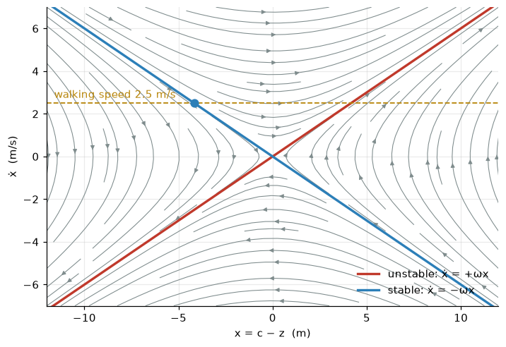
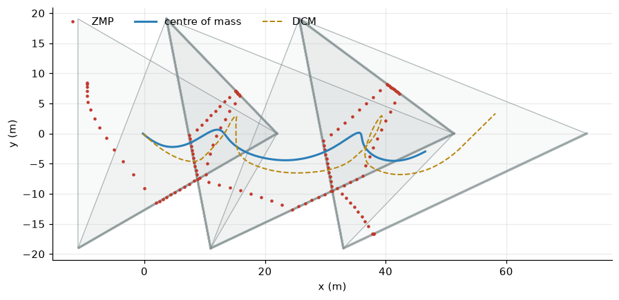

Inverted pendulums, the zero-moment point, the capture point and model-predictive control, on a Martian tripod (part 4 of 4)
How to plan a gait for a machine that is always falling: the linear inverted pendulum, the zero-moment point and support polygon, the divergent component of motion and capture point, a ZMP quadratic programme solved with OSQP, and receding-horizon MPC recovering from pushes.
explainer
robotics
control
optimisation
python
Author
Paul Milne
Published
October 25, 2026
Last of four explainers behind The Martian Tripod. Parts 1 and 2 covered geometry: where the feet are and how to put them there. Part 3 covered force, and ended on an awkward discovery. With a foot in the air, the tripod’s grasp matrix loses a rank: nothing the legs do can resist a tip about the line through the two planted feet. A walking tripod is never in static equilibrium. It is always falling, and each footfall catches it.
There are two ways to walk like that. The static way, the project’s first gait, carries the centre of mass to the edge of the next two-foot support, stops, lifts the foot, lets the body topple onto the new foot, and settles. It works at about 1.1 mph. The dynamic way, which reaches 5.6 mph, plans the fall in advance and keeps the body moving throughout. This post builds that planner from the ground up.
COM height h = 27.2 m: omega = sqrt(g/h) = 0.601 1/s, time constant 1/omega = 1.67 s
From a falling pole to a linear model
Picture the machine’s whole mass \(m\) at its centre of mass \(\mathbf c\), held at height \(h\) above the ground by massless legs. The ground pushes on the feet, and the net ground force \(\mathbf F\) acts through some point \(\mathbf z\) on the ground. Two conditions fix everything.
Vertical: if the height is held constant, the vertical force just carries the weight: \(F_z = mg\).
Rotational: a point mass has no angular momentum about itself, so the net force on it must point through it. The force’s line of action runs from \(\mathbf z\) on the ground to \(\mathbf c\) in the air, so its horizontal and vertical components are in the ratio of the horizontal and vertical offsets: \[\frac{F_x}{F_z} = \frac{c_x - z_x}{h}.\]
Newton’s second law horizontally, \(m\ddot c_x = F_x\), then gives the linear inverted pendulum model (LIPM; Kajita and colleagues, 2001):
with the same equation in \(x\) and \(y\), independently. It is linear, which is the whole point: an inverted pendulum with a fixed-length leg is nonlinear, but holding the height constant makes the dynamics exactly linear.
The point \(\mathbf z\) is the zero-moment point (ZMP, Vukobratović, 1972). It is the point on the ground about which the ground forces have no horizontal moment. When every foot is on flat ground, it is simply the centre of pressure, the load-weighted average of the foot positions:
\[
\mathbf z = \frac{\sum_i f_{i,z}\,\mathbf p_i}{\sum_i f_{i,z}} .
\]
Since every \(f_{i,z} \ge 0\) (the ground can only push), \(\mathbf z\) is a convex combination of the feet. It must lie inside the support polygon, their convex hull. This is the barycentric-coordinate result from part 3 read backwards. There, the centre of mass’s position fixed the foot loads. Here, choosing the foot loads places the ZMP anywhere in the polygon, and the ZMP steers the centre of mass.
That is the planner’s whole control authority. The legs choose where the ZMP is, within the support polygon, and the centre of mass falls away from it.
What the pendulum does
With \(\mathbf z\) held still, write \(x = c - z\) for one axis. The solution of \(\ddot x = \omega^2 x\) is
\[
x(t) = x_0\cosh\omega t + \frac{\dot x_0}{\omega}\sinh\omega t .
\]
The quantity
\[
E = \tfrac12\dot x^2 - \tfrac12\omega^2x^2
\]
is conserved, so trajectories in the \((x, \dot x)\) plane are hyperbolas. This is the LIPM’s orbital energy (Kajita & Tani, 1991). If \(E > 0\), the centre of mass has enough speed to pass over the ZMP and carry on. If \(E < 0\), it falls back the way it came. The boundary lines \(\dot x = \pm\omega x\) are the eigenvectors of the dynamics. Along \(\dot x = -\omega x\) the body glides in and stops exactly above the ZMP. Along \(\dot x = +\omega x\) it falls away exponentially.
Show code
xs = np.linspace(-12, 12, 41); vs = np.linspace(-7, 7, 41)X, V = np.meshgrid(xs, vs)fig, ax = plt.subplots(figsize=(7.5, 5))ax.streamplot(X, V, V, w*w*X, color=GREY, density=1.1, linewidth=0.7, arrowsize=0.8)ax.plot(xs, w*xs, color=RED, lw=2.2, label="unstable: ẋ = +ωx")ax.plot(xs, -w*xs, color=BLUE, lw=2.2, label="stable: ẋ = −ωx")v_walk =2.5ax.axhline(v_walk, color=BRASS, ls="--", lw=1.2); ax.text(-11.6, v_walk +0.25, "walking speed 2.5 m/s", color=BRASS)ax.plot(-v_walk/w, v_walk, "o", color=BLUE, ms=7)ax.set_xlim(-12, 12); ax.set_ylim(-7, 7)ax.set_xlabel("x = c − z (m)"); ax.set_ylabel("ẋ (m/s)"); ax.legend(frameon=False, loc="lower right")plt.show()print(f"to coast to a stop over the ZMP from {v_walk} m/s, start {v_walk/w:.2f} m short of it")

Figure 1: Phase portrait of the linear inverted pendulum with the ZMP fixed at x = 0. Hyperbolas are lines of constant orbital energy. Red: the unstable direction, where the body falls away. Blue: the stable direction, where it comes to rest exactly over the ZMP. The tripod’s walking speed is marked: to stop dead over a point, the body has to start 4 m short of it.
to coast to a stop over the ZMP from 2.5 m/s, start 4.16 m short of it
The divergent component and the capture point
Change variables to split the stable and unstable parts. Define the divergent component of motion (DCM)
\[
\boldsymbol\xi = \mathbf c + \frac{\dot{\mathbf c}}{\omega}.
\]
Differentiating and substituting the LIPM gives two first-order equations:
The second equation is stable: the centre of mass simply chases \(\boldsymbol\xi\) with time constant \(1/\omega\). All the instability is in the first. \(\boldsymbol\xi\) runs away from the ZMP exponentially. The control problem has halved in size: keep \(\boldsymbol\xi\) under control, and the centre of mass looks after itself.
There is a striking special case. Put the ZMP exactly at \(\boldsymbol\xi\) and hold it there. Then \(\dot{\boldsymbol\xi} = 0\), and the centre of mass coasts to a halt directly above the ZMP. So \(\boldsymbol\xi\) is the point on the ground where you must step, or put the centre of pressure, to stop. That is why it is also called the capture point (Pratt and colleagues, 2006). If the capture point leaves the region where any future support polygon could reach it, the fall can no longer be stopped.
There is another way to read the equation for \(\boldsymbol\xi\). Solving it forward from time \(t\) and asking that \(\boldsymbol\xi\) stays bounded (the robot does not fall over) forces
The DCM now is a discounted average of all future ZMPs, with a discount time of \(1/\omega = 1.67\) s. A walk that doesn’t fall must therefore be planned with the future in view: where the ZMP will be over the next few seconds determines what the body must do now. That one equation is why the tripod needs a predictive planner, and how far ahead it must look.
The hinge, in pendulum terms
On three feet the ZMP can go anywhere in the triangle. On two feet the support polygon collapses to the line segment between them. Resolve the motion along and across that line. Along it, the ZMP can still slide, so that component is controlled. Across it, the ZMP is pinned at zero offset, and the equation becomes
\[
\ddot y = \omega^2 y ,
\]
a pure, uncontrolled fall: part 3’s hinge again. The tripod spends 60% of its walking time on two feet, so 60% of the time it is free-falling sideways. The fall is slow, because \(1/\omega = 1.67\) s for a 27 m pendulum, but it cannot be stopped from two feet. The planner’s job on three feet is to set up the state so that the coming fall lands the body where the next footfall will catch it.
Show code
for y0, v0 in ((1.0, 0.0), (1.0, 0.5), (-1.0, 1.0)): y12 = y0*math.cosh(w*1.2) + v0/w*math.sinh(w*1.2) xi = y0 + v0/wprint(f"start {y0:+.1f} m from the hinge moving {v0:+.1f} m/s: after a 1.2 s swing {y12:+.2f} m (DCM {xi:+.2f} m)")
start +1.0 m from the hinge moving +0.0 m/s: after a 1.2 s swing +1.27 m (DCM +1.00 m)
start +1.0 m from the hinge moving +0.5 m/s: after a 1.2 s swing +1.92 m (DCM +1.83 m)
start -1.0 m from the hinge moving +1.0 m/s: after a 1.2 s swing +0.04 m (DCM +0.67 m)
The last line shows the DCM’s predictive power. The body starts 1 m on one side of the hinge but moving towards it fast enough that its DCM is on the other side, so it crosses over. Where it ends up is decided by the side of the line the DCM is on, not the side the body is on.
Discretising exactly
The planner works on a time grid of \(\Delta t = 0.1\) s, with the ZMP held constant during each interval. Because the LIPM is linear with constant coefficients, the state after one interval is exact, not an approximation like Euler’s method:
dt =0.1Ch, Sh = math.cosh(w*dt), math.sinh(w*dt)A = np.array([[Ch, Sh/w], [w*Sh, Ch]]); B = np.array([1- Ch, -w*Sh])rng = np.random.default_rng(3)zs = rng.uniform(-3, 3, 40); x = np.array([0.0, 1.0]); traj = [x]for z in zs: x = A @ x + B*z; traj.append(x)sol_c, sol_v =0.0, 1.0# integrate the ODE numerically, piece by piecefor z in zs: s = solve_ivp(lambda t, y: [y[1], w*w*(y[0] - z)], (0, dt), [sol_c, sol_v], rtol=1e-12, atol=1e-12) sol_c, sol_v = s.y[:, -1]print(f"after 4 s of random ZMP moves: exact map {traj[-1].round(9)}, ODE solver {np.round([sol_c, sol_v], 9)}")print(f"eigenvalues of A: {np.linalg.eigvals(A).round(4)} = exp(+-omega dt) = {math.exp(w*dt):.4f}, {math.exp(-w*dt):.4f}")
after 4 s of random ZMP moves: exact map [10.72000848 6.53920555], ODE solver [10.72000848 6.53920555]
eigenvalues of A: [1.0619 0.9417] = exp(+-omega dt) = 1.0619, 0.9417
The eigenvalues \(e^{\pm\omega\Delta t}\) are the discrete version of the stable/unstable split. One mode shrinks by 6% per step, the other grows by 6%.
The ZMP planner as a quadratic programme
Now set up the planning problem. Stack everything over a horizon of \(N\) steps into one vector of decision variables: the states \(\mathbf x_0, \dots, \mathbf x_N\) (position and velocity, in \(x\) and \(y\)) and the ZMPs \(\mathbf z_0, \dots, \mathbf z_{N-1}\). Then
keep the ZMP near the middle of the support (around the centroid \(\bar{\mathbf p}_k\) of the planted feet).
The constraints are all linear. A triangle is three half-planes, \(\mathbf n_e^\top\mathbf z \le \mathbf n_e^\top\mathbf a_e - \text{margin}\) for each edge \(e\) with outward normal \(\mathbf n_e\). A two-foot line is an equality across it plus two bounds along it. A quadratic cost with linear constraints is a quadratic programme (QP). It is convex, so there is one global optimum and fast, reliable solvers find it. The tripod uses OSQP, an operator-splitting solver designed for exactly this kind of sparse, repeated problem.
A one-dimensional warm-up
Before the full planar version, here is the same QP stripped to one dimension, written out from scratch: a walker on a line. The footsteps advance 7.33 m every 2 s. For 0.8 s of each step the ZMP may be anywhere between the rear and front feet; for the next 1.2 s it is confined to a 1 m patch around the front foot, the 1-D stand-in for the hinge.
Show code
L, T_ds, T_ss, T_start =22.0/3, 0.8, 1.2, 2.0N =240; tk = np.arange(N)*dt + dt/2# plan 24 s, show the first 20def bounds(t):if t < T_start: # standing start: feet at -L and +Lreturn (-L, L) k, tau =divmod(t - T_start, T_ds + T_ss); k =int(k) rear, front = k*L, (k +1)*Lreturn (rear, front) if tau < T_ds else (front -0.5, front +0.5)lo_hi = np.array([bounds(t) for t in tk])v_ref = L/(T_ds + T_ss)nx, nz =2*(N +1), N # variables: (c, v) at each knot, then ziC =lambda k: 2*k; iV =lambda k: 2*k +1; iZ =lambda k: nx + kPm = sp.lil_matrix((nx + nz, nx + nz)); q = np.zeros(nx + nz)for k inrange(1, N +1): # speed tracking Pm[iV(k), iV(k)] +=1.0; q[iV(k)] -= v_reffor k inrange(N): # ZMP smoothness and centring mid = lo_hi[k].mean() Pm[iZ(k), iZ(k)] +=0.01; q[iZ(k)] -=0.01*midif k >0: Pm[iZ(k), iZ(k)] +=30; Pm[iZ(k -1), iZ(k -1)] +=30 Pm[iZ(k), iZ(k -1)] -=30; Pm[iZ(k -1), iZ(k)] -=30rows, lo, hi = [], [], []def con(coef, l, u): rows.append(coef); lo.append(l); hi.append(u)con({iC(0): 1}, 0.0, 0.0); con({iV(0): 1}, 0.0, 0.0) # start at rest at x = 0, between the feetfor k inrange(N): con({iC(k +1): 1, iC(k): -A[0, 0], iV(k): -A[0, 1], iZ(k): -B[0]}, 0, 0) con({iV(k +1): 1, iC(k): -A[1, 0], iV(k): -A[1, 1], iZ(k): -B[1]}, 0, 0) con({iZ(k): 1}, *lo_hi[k])Am = sp.lil_matrix((len(rows), nx + nz))for r, coef inenumerate(rows):for c_, v_ in coef.items(): Am[r, c_] = v_solver = osqp.OSQP()solver.setup(sp.csc_matrix(2*Pm), 2*q, sp.csc_matrix(Am), np.array(lo), np.array(hi), verbose=False, eps_abs=1e-6, eps_rel=1e-6, max_iter=20000, polishing=True)res = solver.solve()xsol = res.x[:nx].reshape(N +1, 2); zsol = res.x[nx:]c, v = xsol[:, 0], xsol[:, 1]; xi = c + v/wprint(f"OSQP status: {res.info.status}, {res.info.iter} iterations, {res.info.run_time*1e3:.1f} ms;"f" {nx + nz} variables, {len(rows)} constraints")t_knots = np.arange(N +1)*dtshow = t_knots <=20; show_z = tk <=20fig, (a1, a2) = plt.subplots(2, 1, figsize=(9, 5.6), sharex=True, gridspec_kw={"height_ratios": [2, 1]})a1.fill_between(tk[show_z], lo_hi[show_z, 0], lo_hi[show_z, 1], step="mid", color=GREY, alpha=0.2, label="allowed ZMP")a1.step(tk[show_z], zsol[show_z], where="mid", color=RED, lw=1.5, label="ZMP")a1.plot(t_knots[show], c[show], color=BLUE, lw=2, label="centre of mass")a1.plot(t_knots[show], xi[show], color=BRASS, lw=1.5, ls="--", label="DCM ξ")a1.set_ylabel("position (m)"); a1.legend(frameon=False, loc="upper left", ncol=2)a2.plot(t_knots[show], v[show], color=BLUE, lw=2); a2.axhline(v_ref, color=GREY, ls=":")a2.set_ylabel("speed (m/s)"); a2.set_xlabel("time (s)")plt.tight_layout(); plt.show()# the DCM really is the discounted future ZMP (check at t = 6 s, ignoring the horizon's end)k0 =60; s_ = np.arange(k0, N)xi_future = np.sum(np.exp(-w*(s_ - k0)*dt)*(1- math.exp(-w*dt))*zsol[s_])print(f"DCM at t = 6 s: from the state {xi[k0]:.2f} m; as the discounted sum of future ZMPs {xi_future:.2f} m")
Figure 2: A one-dimensional ZMP plan for the first 20 s of walking from a standing start (feet 7.3 m either side of the body for the first 2 s). Shaded: where the ZMP is allowed. Red: the planned ZMP. Blue: the centre of mass. Brass: the DCM (capture point), which always runs ahead of the body. Bottom: forward speed. The body never stops. Each time the support narrows to the front foot, the body vaults over it like an inverted pendulum, slowing as it approaches the foot and speeding up as it falls past: the ripple in the speed.
DCM at t = 6 s: from the state 23.01 m; as the discounted sum of future ZMPs 23.01 m
Read the picture from left to right. To get going from rest, the planner first puts the ZMP well behind the body: the only way to accelerate forward is to fall forward. Once walking, each three-foot phase sweeps the ZMP forward from the rear foot to the front one. In the narrow phase the ZMP is pinned at the front foot while the body vaults over it, slowing as it climbs towards the foot and speeding up as it falls past. That is the steady ripple in the speed. The capture point \(\xi\) always leads the body by \(\dot c/\omega\), about 6 m at this speed, and keeps ahead of the footsteps. The body has always just enough momentum to reach the next support. The last line confirms the integral formula: the DCM computed from the state equals the discounted sum of the planned future ZMPs. (The discrete version of the weight \(\omega\,dt\,e^{-\omega s}\) is \((1 - e^{-\omega\Delta t})e^{-\omega s}\).)
The real thing: the tripod in the plane
The tripod’s planner (tripod/planner.py) is the same QP in two dimensions with the real support polygons. A footstep schedule says which leg swings when and where it lands. Steps take 2.0 s: 0.8 s on three feet, then 1.2 s with one leg in the air. Each step moves one foot by a 22 m stride, in the order 1, 2, 0. Over a 14 s horizon at 0.1 s resolution there are 140 ZMP knots and 141 states, about 850 variables, solved in roughly 10 ms.
Show code
feet0 = [slot(P, i) for i inrange(3)]sched = Schedule(P, [f.copy() for f in feet0], t0=0.6, ds_time=0.8, ss_time=1.2, stride=22.0)plan = COMPlanner(sched, h, horizon=14.0, margin=1.5, w_pos=0.05)import timet0 = time.perf_counter(); ok = plan.solve(0.0, np.array([-0.24, 0.0]), np.zeros(2)); t_solve = time.perf_counter() - t0X, Z = plan.X, plan.Zfig, ax = plt.subplots(figsize=(9.5, 4.6))seen =set()for j inrange(plan.N): feet, swing = sched.feet_at(j*dt + dt/2) pts = [f for f in feet if f isnotNone] key =tuple(np.round(np.concatenate(pts), 2))if key in seen: continue seen.add(key) poly = np.array(pts + [pts[0]]) ax.plot(poly[:, 0], poly[:, 1], color=GREY, lw=0.8iflen(pts) ==3else2.2, alpha=0.6)iflen(pts) ==3: ax.fill(poly[:, 0], poly[:, 1], color=GREY, alpha=0.05)ax.plot(Z[:, 0], Z[:, 1], ".", color=RED, ms=4, label="ZMP")ax.plot(X[:, 0], X[:, 1], color=BLUE, lw=2, label="centre of mass")ax.plot(X[:, 0] + X[:, 2]/w, X[:, 1] + X[:, 3]/w, "--", color=BRASS, lw=1.3, label="DCM")ax.set_aspect("equal"); ax.set_xlabel("x (m)"); ax.set_ylabel("y (m)"); ax.legend(frameon=False, loc="upper left", ncol=3)plt.show()print(f"solved: {ok} in {t_solve*1e3:.0f} ms; {plan.N} ZMP knots; schedule speed {sched.speed:.2f} m/s")

Figure 3: One solve of the tripod’s planner from standing still, seen from above. Grey triangles and lines: the support polygon over time (three-foot triangles and two-foot hinge lines). Red: the planned ZMP, which hops between hinge lines and sweeps across triangles. Blue: the planned centre of mass, weaving from side to side as each new hinge appears in a different direction. Brass: the DCM. The far end of the plan is the least constrained part, and it curls away; it is never executed, because the plan is re-solved long before the body gets there.
solved: True in 12 ms; 140 ZMP knots; schedule speed 3.67 m/s
How far ahead must it look?
The DCM integral says the present depends on the future ZMP, discounted with a 1.67 s time constant. A planner that looks only a second or two ahead cannot see the supports it will need, so it plans motions that look fine within its horizon and are doomed just beyond it. It has no notion that the body must still be catchable when the horizon ends. This is easy to test: run the receding-horizon loop on the pendulum with different horizons.
Show code
def walk(horizon, T=30.0, push=None, replan=True, sim_dt=0.01): s = Schedule(P, [f.copy() for f in feet0], 0.6, 0.8, 1.2, 22.0) pl = COMPlanner(s, h, horizon=horizon, margin=1.5, w_pos=0.05) c, v, t, last, last_sup, out = np.array([-0.24, 0.0]), np.zeros(2), 0.0, -1e9, None, [] Cs, Ss = math.cosh(w*sim_dt), math.sinh(w*sim_dt)while t < T: k, _ = s.step_of(t); _, sw = s.feet_at(t); sup = (k, sw) may_replan = replan or (push isnotNoneand t < push[0])if pl.X isNoneor (may_replan and (sup != last_sup or t - last >=0.4)): pl.solve(t, c, v); last, last_sup = t, sup z = pl.reference(t)[3] c, v = z + (c - z)*Cs + v*Ss/w, (c - z)*w*Ss + v*Cs # the exact pendulum, ZMP held over the stepif push isnotNoneandabs(t - push[0]) < sim_dt/2: v = v + np.array([0.0, push[1]]) t += sim_dt; out.append((t, *c, *v))if np.linalg.norm(c - s.nominal(t)) >40: break# fallen overreturn np.array(out), sprint("horizon outcome")for H in (1, 2, 3, 4, 6, 8, 14): tr, s = walk(H) fell = tr[-1, 0] <29.9print(f"{H:5.0f} s "+ (f"falls after {tr[-1, 0]:.1f} s"if fell elsef"walks 30 s: {tr[-1, 1] - tr[0, 1]:.0f} m at {(tr[-1, 1] - tr[0, 1])/30:.2f} m/s"))
horizon outcome
1 s falls after 5.7 s
2 s falls after 4.6 s
3 s falls after 8.0 s
4 s falls after 22.5 s
6 s walks 30 s: 102 m at 3.42 m/s
8 s walks 30 s: 105 m at 3.49 m/s
14 s walks 30 s: 105 m at 3.49 m/s
Horizons of four seconds or less fail. Every individual QP is feasible, and the planner never reports a problem, yet the walk diverges: within a few steps for horizons of 1–3 s, after about ten steps at 4 s. From six seconds on, one full gait cycle (three steps of 2 s), the walk is stable and longer horizons change little. The rule of thumb in humanoid robotics is a preview of one to two steps; for this slow, tall pendulum on a three-step cycle, that means a whole cycle. The project uses 14 s for margin.
Model-predictive control: replanning from what actually happened
A plan computed once and followed blindly is open-loop. The pendulum is unstable, so any error — a gust, a misplaced foot, a modelling error — grows like \(e^{\omega t}\), doubling every 1.15 s. The cure is to re-solve the QP frequently from the measured state. Execute only the first part of each plan, then plan again. This is receding-horizon or model-predictive control (MPC). The tripod re-plans at every change of support and every 0.4 s in between.
To see the difference, push the walking pendulum sideways at \(t = 10\) s, and compare the MPC loop with one that stops re-planning at the moment of the push.
Figure 4: Recovery from a sideways push at t = 10 s (a sudden 2 m/s change in lateral velocity, the equivalent of a 514 kN·s impulse on the 257-tonne machine). Grey: the unpushed walk. Blue: MPC, re-planning from the measured state; the deviation peaks at about 2 m and has shrunk to about 10 cm seven steps later. Red: the same push with the plan frozen at the moment of impact; the body falls away exponentially.
MPC: peak deviation 2.34 m; 1.15 m at 15 s; 0.28 m at 20 s; 0.12 m at 24 s
frozen plan: 3.8 m at 12 s, 31.7 m at 15 s
The frozen plan does not merely drift. Its error grows exponentially, the straight line on the log scale, because the push has moved the DCM and the old plan’s ZMP no longer contains it. MPC sees the new state at the next re-plan and moves the ZMP to absorb the push over the following steps. The deviation decays steadily, and the robot rejoins its path.
In the full MuJoCo simulation
The tripod model has extra machinery on top of this. Its whole-body controller adds a spring-damper pulling the centre of mass towards the plan. While three feet are down, friction at the feet can resist sideways forces directly. In the full simulation, a 2 m/s lateral push of 0.5 s duration during the walk hardly disturbs it. The pure pendulum above, with nothing but the ZMP to steer with, shows the planner’s contribution on its own.
From plan to torques
The planner outputs a centre-of-mass trajectory and a ZMP. Turning those into motor commands uses everything from the earlier parts, about 500 times a second.
Desired force. Compute the force that keeps the centre of mass on the plan: the planned acceleration \(m\ddot{\mathbf c}_\text{plan}\) as feedforward, plus a spring-damper on the tracking error, plus the weight. Compute a moment that keeps the hood level.
Share it among the planted feet. Solve the grasp-matrix least-squares problem from part 3, with every foot pushing and inside its friction cone. On two feet, drop the moment component about the hinge, which can’t be produced.
Torques. Map each foot force through \(\boldsymbol\tau = \mathbf g(\mathbf q) - J^\top\mathbf f\), the virtual-work law of part 3.
Swing leg. Move the lifted foot along its task-space arc using closed-form IK (part 2) and a joint servo, landing on the next scheduled foothold.
The result in MuJoCo, from the main post:
15 steps in 30.6 s, covering 77 m at 5.6 mph;
59% of the time on two feet;
the hood never tilting more than 2.7°.
That is five times the speed of the wait-and-topple gait, with a sixth of its tilt.
What this planner leaves out
The LIPM and a fixed footstep schedule are the classic starting point, not the state of the art. Some refinements, roughly in order of how much they would help the tripod:
Footstep optimisation. Here the footholds are fixed in advance and only the ZMP moves. Letting the QP also choose where the feet land, as a capture-point stepping strategy does, gives far more authority against pushes. That matters on two feet, where the ZMP has no sideways authority at all.
Height and angular momentum. Holding the height constant is what made the model linear. Allowing the body to bob, or the hood to pitch, adds more ways to control the body. The usual tool is the centroidal dynamics model, solved by nonlinear MPC.
Leg dynamics. Each 28 t leg weighs a ninth of the machine, and swinging it shoves the body. The LIPM ignores this; whole-body MPC includes it.
Learning. Much of modern legged locomotion is trained by reinforcement learning in simulators like MuJoCo, often with a model-based planner like this one providing structure or reference motions. The main post discusses why MuJoCo became the standard simulator for that work.
Summary
Holding the centre of mass at constant height gives the linear inverted pendulum \(\ddot{\mathbf c} = \omega^2(\mathbf c - \mathbf z)\). The ZMP \(\mathbf z\) is the centre of pressure and must stay in the support polygon.
The divergent component \(\boldsymbol\xi = \mathbf c + \dot{\mathbf c}/\omega\) carries all the instability. It equals the discounted future ZMP, so walking must be planned ahead. It is also the capture point: put the ZMP there to stop.
On two feet the support polygon is a line, and the motion across it is a pure fall. A walking tripod is falling sideways 60% of the time.
Exact discretisation plus linear support constraints make ZMP planning a convex QP, solved by OSQP in about 10 ms.
The horizon must cover about one gait cycle; shorter horizons produce feasible plans that still fall.
Re-planning from the measured state (MPC) turns an exponentially unstable open-loop plan into a robust walk.
Further reading
S. Kajita, F. Kanehiro, K. Kaneko, K. Yokoi and H. Hirukawa, “The 3D linear inverted pendulum mode”, IROS (2001), and “Biped walking pattern generation by using preview control of zero-moment point”, ICRA (2003). The LIPM and the first ZMP preview controller.
M. Vukobratović and B. Borovac, “Zero-moment point — thirty five years of its life”, International Journal of Humanoid Robotics 1(1), 2004.
J. Pratt, J. Carff, S. Drakunov and A. Goswami, “Capture point: a step toward humanoid push recovery”, Humanoids (2006).
J. Englsberger, C. Ott and A. Albu-Schäffer, “Three-dimensional bipedal walking control based on divergent component of motion”, IEEE Transactions on Robotics 31(2), 2015.
P.-B. Wieber, “Trajectory free linear model predictive control for stable walking in the presence of strong perturbations”, Humanoids (2006). ZMP planning as a receding-horizon QP.
B. Stellato, G. Banjac, P. Goulart, A. Bemporad and S. Boyd, “OSQP: an operator splitting solver for quadratic programs”, Mathematical Programming Computation 12, 2020.